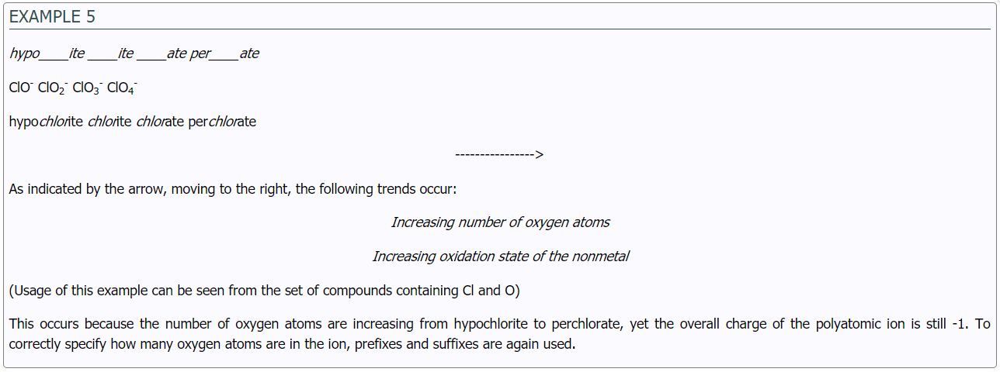

Although HF can be named hydrogen fluoride, it is given a different name for emphasis that it is an acid. An acid is a substance that dissociates into hydrogen ions (H+) and anions in water. A quick way to identify acids is to see if there is an H (denoting hydrogen) in front of the molecular formula of the compound. To name acids, the prefix hydro- is placed in front of the nonmetal modified to end with –ic. The state of acids is aqueous (aq) because acids are found in water.
Some common binary acids include:
HF (g) = hydrogen fluoride -> HF (aq) = hydroflouric acid
HBr (g) = hydrogen bromide -> HBr (aq) = hydrobromic acid
HCl (g) = hydrogen chloride -> HCl (aq) = hydrochloric acid
H2S (g) = hydrogen sulfide -> H2S (aq) = hydrosulfuric acid
It is important to include (aq) after the acids because the same compounds can be written in gas phase with hydrogen named first followed by the anion ending with –ide.
© 2019 Quark. All rights reserved. For Educational purposes only.